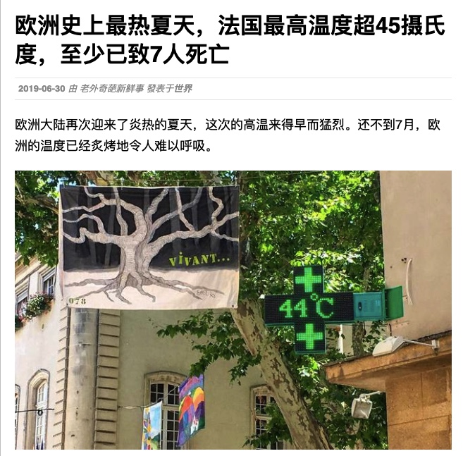
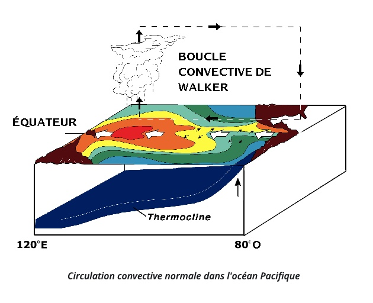
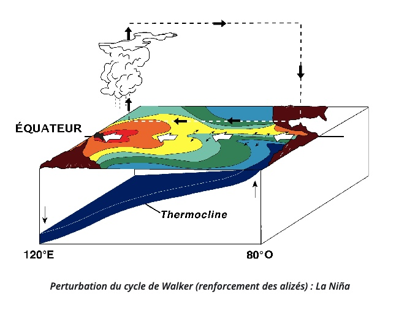
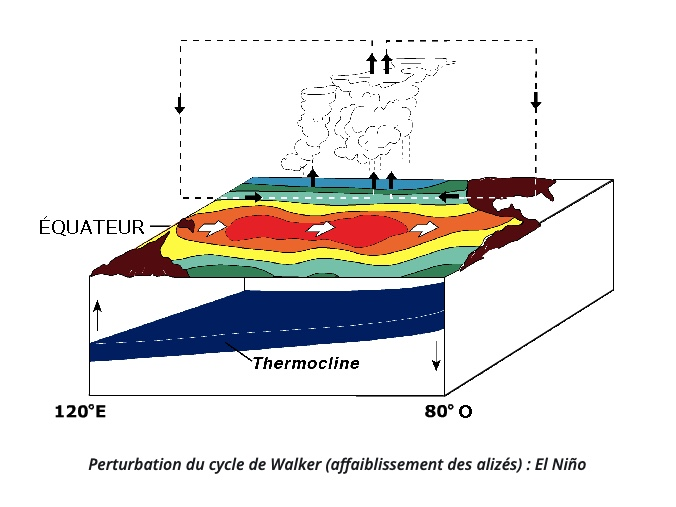
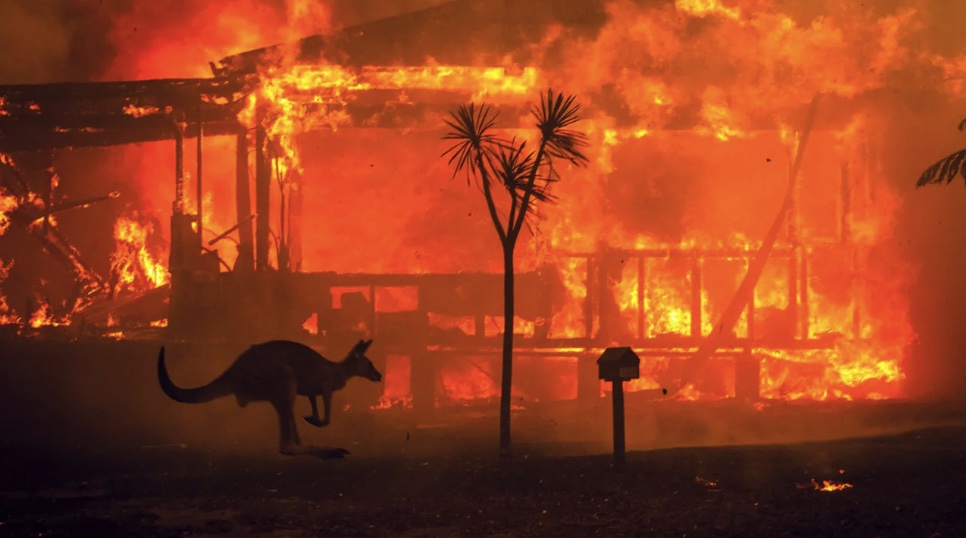
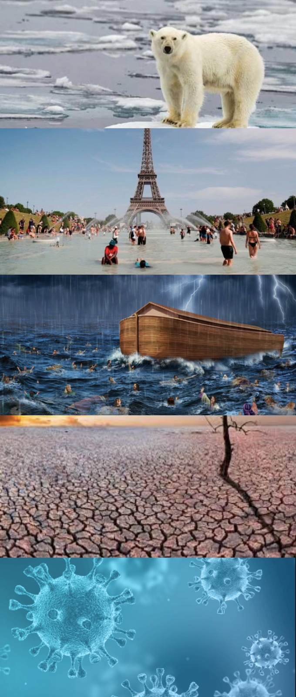

自我介绍
大家好，我是黄琳傲，来自中国，目前就读于法国阿维尼翁大学地理专业本科一年级。我出生于2000年7月3日。我的爱好是烹饪和旅行。在这个网页中我将向您介绍全球变暖相关信息。
我的邮箱
全球变暖的介绍

近年来，我们可以清楚地感受到气温的显著上升。2020年是历史上最热的夏天，我们都知道这是全球变暖所导致的。那么全球变暖的原因和后果是什么？在这个趋势下，情况会在未来有所改善吗？我们需要做些什么来应对气候变化？
拉尼娜和厄尔尼诺现象的影响
厄尔尼诺现象，又称厄尔尼诺海流或“圣婴”现象，也就是“小男孩”的意思，是秘鲁、厄瓜多尔一带的渔民用以称呼一种异常气候现象的名词。主要指太平洋东部和中部的热带海洋的海水温度异常地持续变暖，使整个世界气候模式发生变化，造成一些地区干旱而另一些地区又降雨量过多。通俗来说，厄尔尼诺产生的原因是东或东中部太平洋海水异常升温，导致的洋流逆行，沃克环流减弱。
厄尔尼诺相反的自然现象称为拉尼娜，拉尼娜是西班牙语“小女孩，圣女”的意思，是厄尔尼诺现象的反相，也称为“反厄尔尼诺”或“冷事件”，它是指赤道附近东太平洋水温反常下降的一种现象，表现为东太平洋明显变冷，同时也伴随着全球性气候混乱，总是出现在厄尔尼诺现象之后。通俗来说，拉尼娜是指东太平洋冷海水上泛，所引起的气候增强的异常现象。

正常情况下

拉尼娜现象下气候异常变冷

厄尔尼诺现象下气候异常变暖
拉尼娜和厄尔尼诺现象在1900和2020年间的循环分布
温度的变化的确是一个循环的过程，但我们可以从数据中得出结论，从1958年至今温度升高太快并且太剧烈。
全球变暖的成因：温室气体过度排放
下表为从远古至今三种主要温室气体排放的统计图
全球变暖的后果
全球变暖已造成许多自然灾害，并对人类生活造成了严重后果。下表为1900至2020年间全球自然灾害数量统计图。
海平面上升
受海平面上升影响严重的岛屿：马尔代夫
马尔代夫，印度洋上一个由1200多个珊瑚岛礁组成的群岛国家，曾被喻为“度假天堂”，现在却面临着“消失”的危险。2008年11月，总统穆罕默德·纳希德宣布：马尔代夫计划举国搬家，澳大利亚、印度、斯里兰卡以及一些南太平洋岛国都是“新家”的选择之一。不可阻挡的海面上升，将使马尔代夫全国30多万居民沦为无家可归的环境难民。许多岛屿正受到海水的严重侵蚀，陆地越来越少。洁白细软的海滩正逐步被上升的海面所淹没，椰子树由于海水侵蚀根基不稳而倒掉，海滩上的度假屋也被迫弃用。据政府的最新统计，在马尔代夫有人居住的195个岛屿中，竟然有164个正遭到大海的严重侵蚀。
马尔代夫群岛由珊瑚礁、珊瑚沙组成，是世界上海拔最低的国家，平均海拔只有1.2米，80%的国土高于海面不到1米，最高处仅比海面高2.44米。南北极的冰川融化使更多的水进入海中；海温上升会使海水的体积变大，这些最终都将导致海面上升。科学家预测，由于温室气体的大量排放，到21世纪末，气温将平均升高2℃，海平面将上升约0.6～1.4米。
山火
2019年－2020年澳大利亚丛林大火泛指一系列在2019年9月开始在澳大利亚因为天气炎热加上干燥而各地燃烧的山火。截至2020年1月8日，山火共烧毁5,900多栋建筑物，另有34人死亡（包含8名新南威尔士州及维多利亚州的消防志工在内。）根据麦觉理大学估计，包括蝙蝠、两栖动物和昆虫等动物，约有数十亿动物在这场大火中死亡。

大多数科学家都认为，澳大利亚大火的增加与全球变暖有关，而全球变暖本身又与人类活动和加剧的大火有关。考虑到历史气温，科学家们是肯定的：气候变化严重加剧了该国9月26日开始的大火。
2017年，澳大利亚气象局已经警告该国近年来气温有危险上升，并指出：“自1910年以来，澳大利亚的大气变暖了一个多度，导致极端高温事件的发生频率增加。在澳大利亚东南部，4月至10月的降雨减少了11％（今天受大火影响最严重的部分）。该国许多地区的火灾季节明显增加。 “ 。
澳大利亚气象局网站指出，“气候变化会影响森林火灾危险的频率和严重程度” 。
政府科学研究组织（CSIRO）于2018年发布的气候报告将大火，大火的持续时间和气候变化的增加联系在一起：“近年来，澳大利亚许多地区，尤其是在南部和东部，森林火灾的风险增加了。同时，火灾季节的持续时间增加了。气候变化，包括气温上升，正在助长这些变化。”因此，在未来的几十年中，国家气候预测预计“南澳大利亚州和东部地区的天数增加，发生火灾的风险较高，火灾季节更长”。
气候变暖引起的其他主要后果
冰川融化
蒙大拿州冰川国家公园由于地表温度升高而失去了许多美景。
热浪
席卷欧洲的致命热浪在2003年造成约35,000人丧生。
暴风雨和洪水
近年来，美国和英国遭受了非常严重的风暴和洪水的袭击，这些风暴和洪水夺去了许多人的生命，并造成数亿美元的财产损失。
干旱
随着气候变暖，专家估计干旱可能会增加至少66％，从而减少水供应并降低农作物的生产质量，全世界的人们也越来越容易受到饥饿的威胁。
疾病
随着洪水和干旱，炎热的天气为该病毒创造了良好的生长环境。蚊子，扁平虱子，小鼠和其他携带疾病的生物正变得越来越繁荣。世界卫生组织说，新的或复发性的病毒可以迅速传播，可以在恶劣的条件下生存，在不同的国家，有些热带病可以在寒冷的地方发生。

结论
地球上有一些大的周期在某个阶段使气候变暖，但是从1958年到今天，它表现出了迅速而激进的趋势，这是历史上前所未有的，这与过量的温室气体排放（如二氧化碳）密切相关。缓解全球变暖的方法是限制人类活动并减少碳排放。
阿维尼翁大学联系方式
Avignon Université
电话 : 04 90 16 25 00
地址 : 74 Rue Louis Pasteur, 84029 Avignon
官网 : https://univ-avignon.fr/site-institutionnel-de-l-universite-d-avignon-859.kjsp
我的联系方式